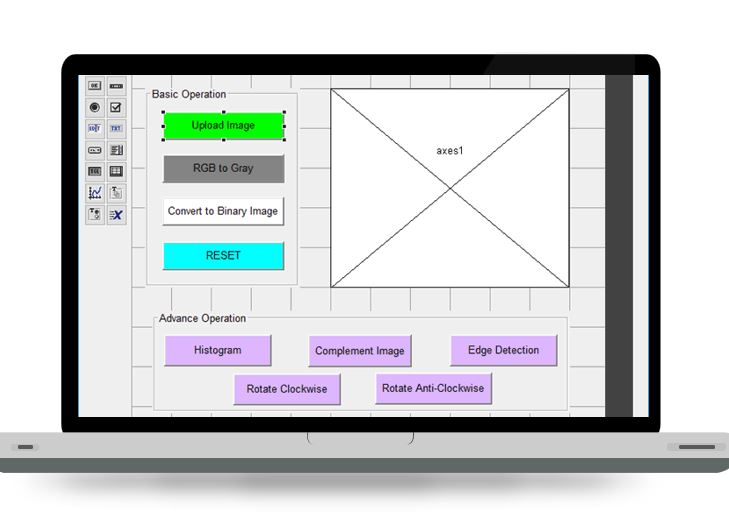

A Project made for the J component of Image Processing by,
- Shane Gomes - 19BCE1081
ABSTRACT
Graphic User Interface (GUI) was designed to integrate many functions in image processing field to call back such that it can perform actions of Image processing functions such as image segmentation, skin detection, level set technique, object extraction, separating colour image components and combining gray images, adding different noises and pre-processing operations such as different filtering to remove these noises. A good GUI can make programs easier to use by providing them with a consistent appearance and with intuitive controls like pushbuttons, list boxes, sliders, menus, and so forth. The designed GUI is easy to use and program. The results finally after executing may show that many image processing functions can be integrated in one file to be called and then get actions. The level set technique can give very accurate and clear results. Finally it will be easy using MATLAB programming to get useful image processing toolbox.